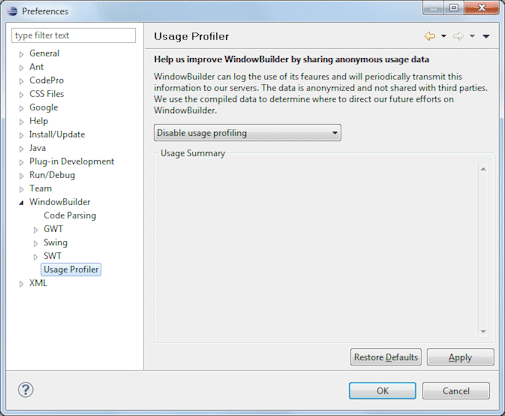
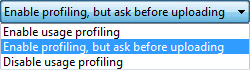

Preferences - Usage Profiler This page is used to control various Usage Profiler options. The tool can log the use of its features and will periodically transmit this information to our servers. The data is anonymized and not shared with third parties. We use the compiled data to determine where to direct our future efforts. Enable usage profilingThe Usage Profiler may be enabled with automatic data uploading, enabled with prompting prior to uploading (approximately once per week), or disabled.  |